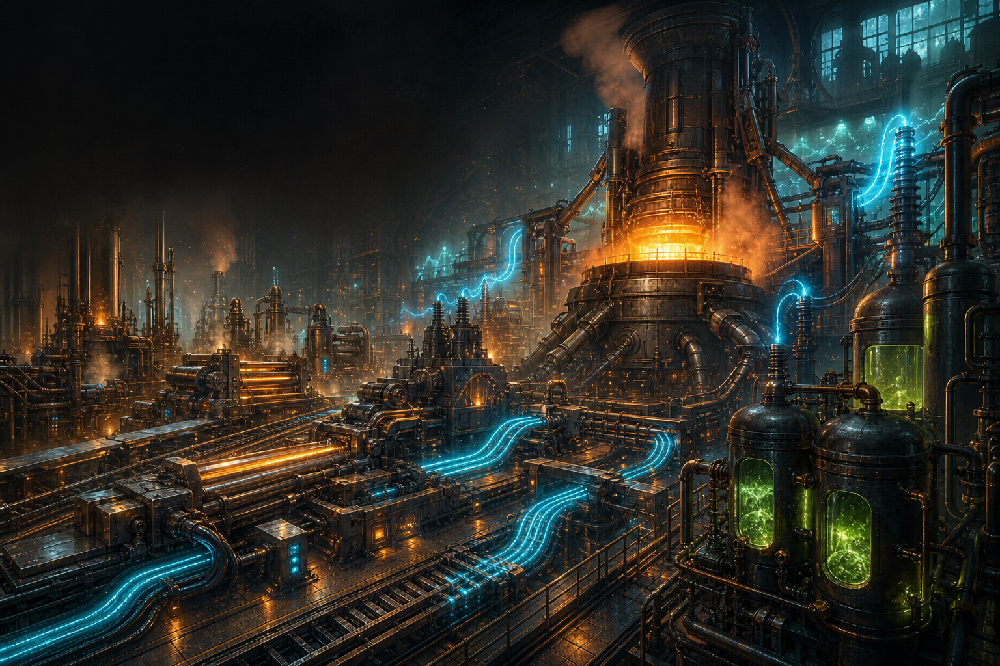

Click Foundry release notes
r1.2.0 The Medium Voltage Era
Gameplay-facing changes for the public build. Share the PDF version as click-foundry-r1.2.0-patch-notes.pdf.

Patch Notes
- The Medium Voltage era is open: build the complete MV machine fleet for faster processing at a higher EU demand, backed by aluminium infrastructure, MV circuits, motors, pumps, pistons, batteries, transformers, cables, and expanded factory floors.
- Shape metal at scale with the MV Extruder. Reusable molds now form plates, rods, rings, bolts, and gears, replacing the old Assembler shortcuts and rewarding dedicated production lines.
- Fabrication networks now deliver end-to-end automated crafting through powered controllers, network cabling, physical encoded patterns, machine interfaces, planning racks, crafting requests, and live job tracking.
- Grow and refine renewable fuel through Powered Farms, Pyrolysis Ovens, Distilleries, and LV or MV Combustion Generators, with benzene production and useful byproducts designed for complete factory routing.
- The new Polymer Works line turns sugar cane into ethanol, ethylene, liquid polyethylene, cast plates, pipes, and the four-million-litre LV Super Tank while recovery recipes put process byproducts back to work.
- Power networks gain multi-amp tin and aluminium cables plus lossless LV and MV superconductors. Live buffer flow, corrected cable delivery, and clearer factory graphics make bottlenecks easier to diagnose.
- Machine terminals, boilers, tanks, fluid textures, slots, progress bars, and automation controls now share a cleaner mobile layout, with long-press inspection and numerous fluid, power, output, and routing fixes.
- The quest book has been reorganised into clearer connected journeys, while the recipe browser now expands item families directly from their icons and orders tools, materials, machines, tanks, and fluids consistently.